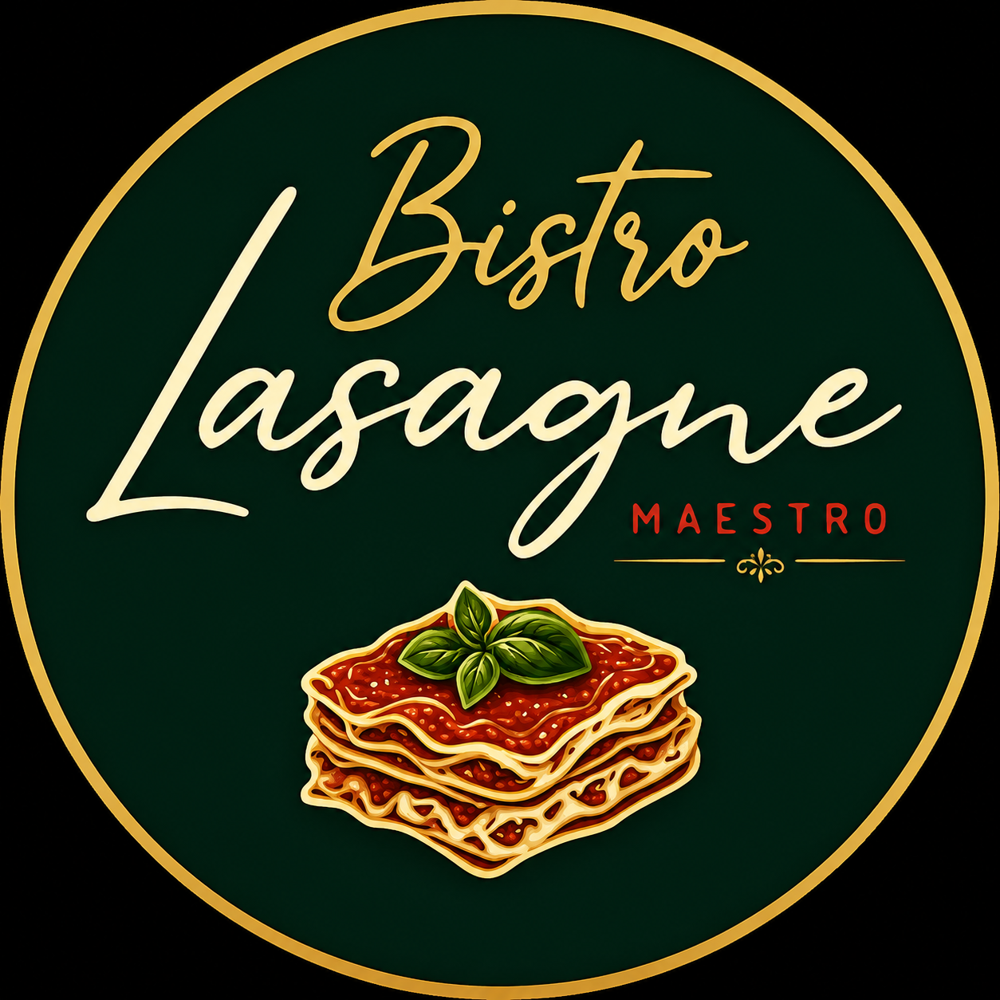
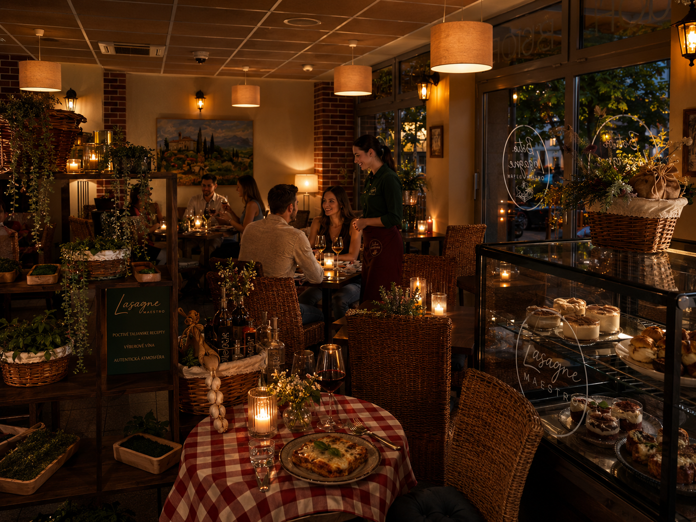
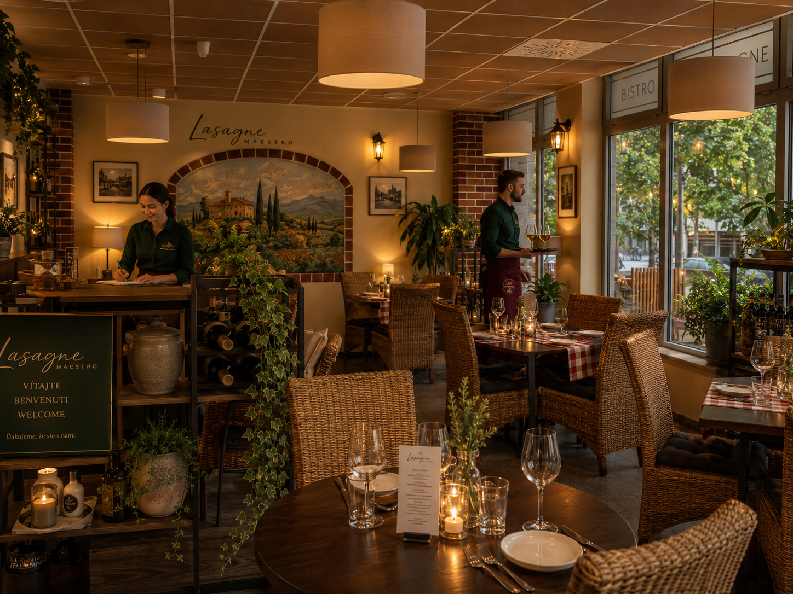

Classico Maestro
tradičné ragú, bešamel, parmezán, mozzarella, bazalka

Lasagne MaestroBistro • Lasagne • Vino
Talianske bistro, kde sa vrstvy cesta, ragú, bešamelu a syra menia na pomalý moment pri víne, sviečkach a vôni čerstvej bazalky.
Naša filozofia
Lasagne Maestro stavia na jednoduchosti, kvalite a atmosfére. Chceme, aby hosť hneď pri prvom pohľade cítil Taliansko: tmavé drevo, zlaté svetlo, zelené tóny, vôňa paradajok, víno na stole a jedlo, ktoré má svoj čas.
Stránka je navrhnutá tak, aby ukazovala podnik, terasu, jedlá a tím bez zbytočného chaosu. Luxusne, pokojne a jasne: prídete sem na lasagne.
La Specialità
Každá porcia má byť výrazná, teplá, poctivá a zapamätateľná.
tradičné ragú, bešamel, parmezán, mozzarella, bazalka
krémová syrová verzia pre milovníkov jemnej talianskej kuchyne
huby, jemný krém, parmezán a vôňa hľuzovkového oleja
špeciál podľa sezóny, čerstvých surovín a nálady kuchyne

Atmosféra
Interiér je mäkký, teplý a osobný. Terasa je obklopená zeleňou, svetlami a mestskou atmosférou. Lasagne Maestro má pôsobiť ako miesto, kam sa vraciaš nielen kvôli jedlu, ale aj kvôli pocitu.
Galéria


Il Team
Za každým stolom, úsmevom a tanierom stojí tím kuchyne a obsluhy. Táto sekcia je pripravená na reálne fotky a mená ľudí, ktorí tvoria atmosféru podniku.
zodpovedá za chuť, receptúry a kvalitu každej vrstvy
víta hostí, odporúča víno a drží atmosféru večera
krátky osobný príbeh doplníme podľa reálneho zadania
Rezervácia
Vyplňte krátky formulár. Po odoslaní sa otvorí WhatsApp s pripravenou správou, ktorú už len odošlete reštaurácii.